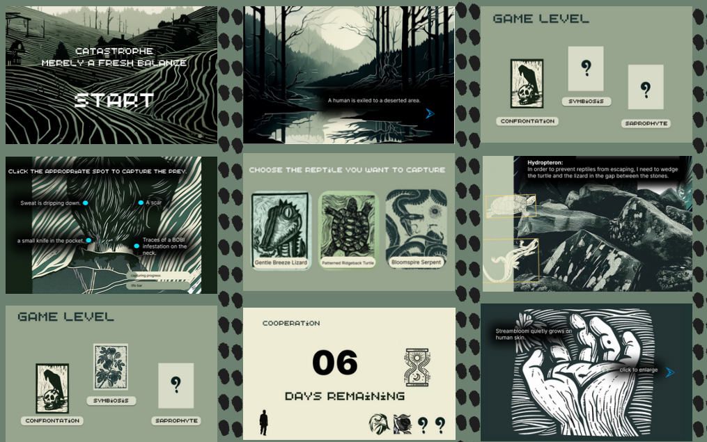
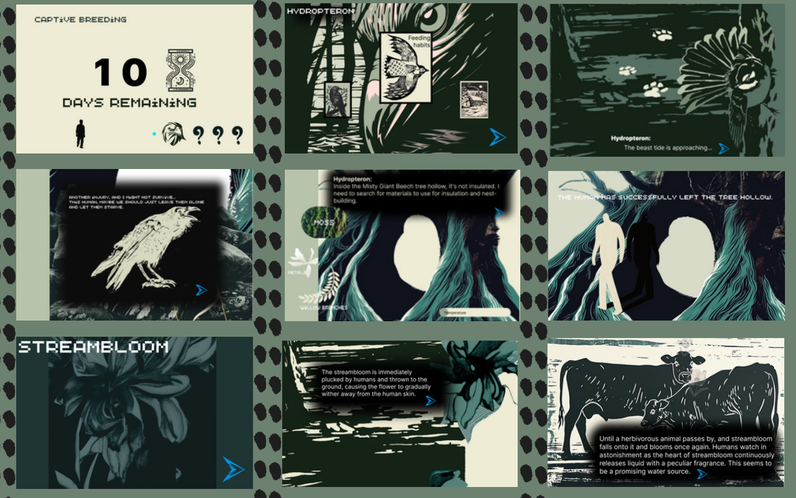
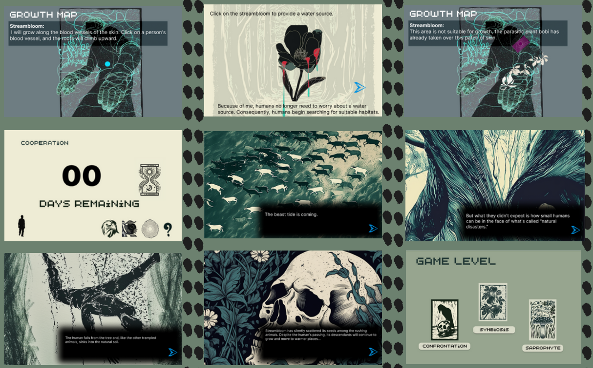
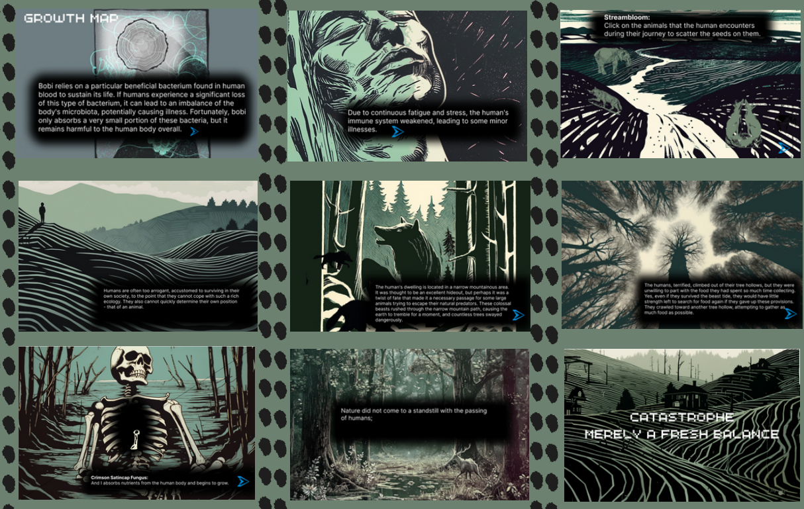

Game Art




Character Design
Each character in the game represents a different aspect of the ecosystem. The design process involved creating unique visual identities for entities like Hydropteron, Streambloom, and the Crimson Satincap Fungus.